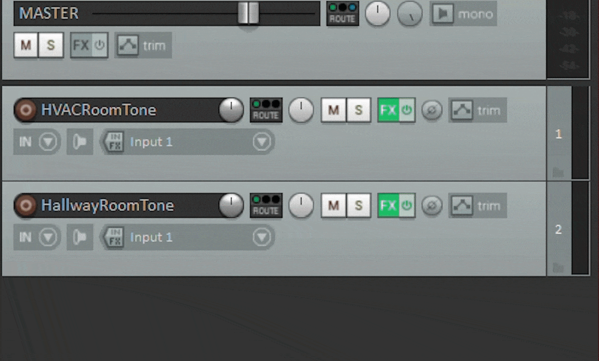
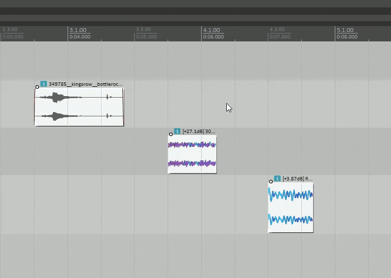
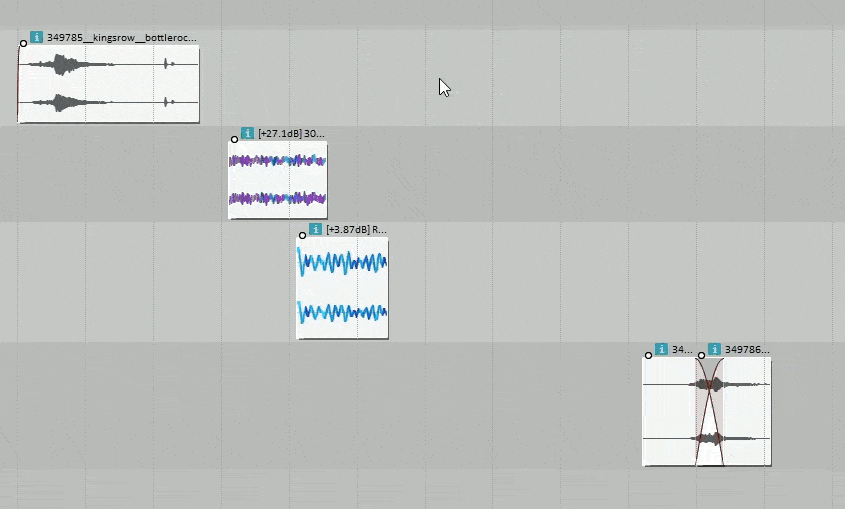

Logan Hardin
Reaper Scripts
A repository of Reapack compliant Lua scripts used for Reaper. Mostly simple utilities.
If you're interested and have Reapack, go to Extensions > Reapack > Import Repositories... and paste the following:

SEPERATE REGIONS PER ITEM WITH TRACK NAME
Makes a region for every selected media item, named after and assigned to its track.
SNAP END OF MEDIA ITEMS
Moves selected media items so their ends meet the nearest grid-line.
Pairs well with scripts that don't cut media items on gridlines. Makes it much easier to edit, make regions over, etc.

ADD PREFIX OR SUFFIX TO REGIONS
For all selected regions, add a string with a seperator to the beginning or end.
Largely edited from Acendan's region enumeration and Find And Replace in Regions/Markers scripts. Please go look at his scripts and other work, especially with the UCS.

NAME AND ENUMERATE REGIONS PER MEDIA ITEM
Makes a region for each selected media item, each with the given name and adequate enumeration. Very convenient to make regions for variations of sounds.
ok and regions matching those settings spring into being." />MOVE MEDIA ITEMS END TO END
For organizing and grouping a set of media items across different tracks. Allows the user to quickly and efficiently "stairstep" selected media items. Crossfaded items on the same track are treated as one, to keep edits together and unbroken.
ok and the media items shuffle into place." />Troubadour Tabletop Audio
Discord bot for playing adaptive audio.
I grew tired of the rudimentary audio tools provided by Roll20 and others, so I wrote a bot to stream FMOD Studio audio through a Discord bot, using the D++ library.
The bot is still WIP, and the first "full" release has yet to come. but please give it a go!
See the GitHub RepoSolar Science
A Kerbal Space Program Mod. Praise the Sun!
This was a project I originally undertook as a high-school directed study. I modeled, textured, animated, and wrote Unity C# scripts for two new experiment parts, based upon those aboard NASA's real SOHO and STEREO missions. Over the years I made small additions, such as experiment requirements, SFX, and real-time images from NASA's feeds.
Over my 5 years of ownership, Solar Science garnered around 50k downloads across all platforms. In early 2020 I handed the project off to KSP Forums user zer0Kerbal, who has maintained the mod since.
Sound Redesigns
Halo 3: ODST
Halo 5 Trailer (Rescore)
Unsolicited (Short Film)
A woman's initial excitement about getting a message quickly turns sour.
Unsolicited is a 1-minute stop-motion student film made by Meg Cook at Texas A&M, as part of her extremely fun MFA body of work. The film was featured at many festivals, including:
- Best Animated Film, Austin Micro Short Film Festival
- Best Animation, Continental Film Festival
- Best of StudentFilmFEST, ReadingFilmFEST
- Gold Medal: Shorter Short Film, UK Seasonal Short Film Festival Winter 2020
- Special Mention, One-Reeler Short Film Competition
- Best Comedic Short Nominee, StoryMode Independent Short Film Awards
The film marked my first time working on a short that I wasn't also a 3D artist for, as well as my first experience recording and performing Foley. Fun facts: the positive text tone was made using a kalimba, and the negative tone was a sped up sci-fi error tone layered with a jaw harp.
More information can be found at nutmegcook.com/unsolicited.
In Living Color (Art)
This project was a re-interpretation of Van Gogh's famous Sunflower series of paintings.
- Each painting was assigned a key on the circle of 5ths, based on their respective "darkness" of scale/color.
- Each key had a handful of guitar passages assigned, improvised from the codes of the most common hex colors in that work.
- The chances of each passage playing corresponded to their color's frequency in the painting, and occassionally the key/painting would change.
- Each of the paintings were reduced to the most common colors, and when a crummy beat detector found a "beat," it would create or destroy voronoi shapes, sampling the colors beneath.
The piece was intended to be projected and left running in a gallery, with the goal to create something new while maintaining a sense of the creative act in the first place: that is, structured and informed improvisation, where the little details are lost to time.
Download the program